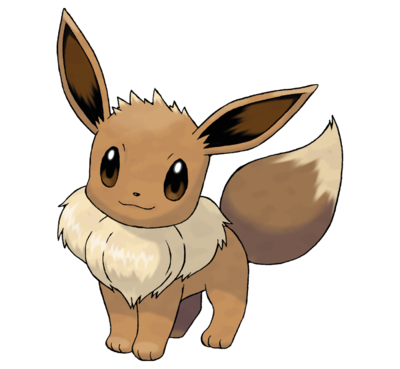
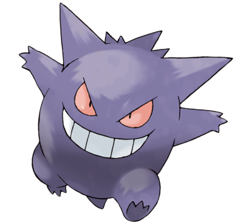
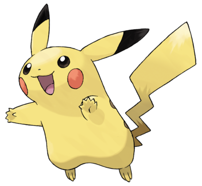
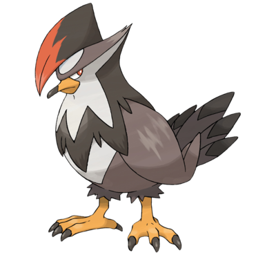
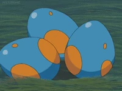
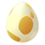
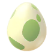
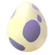
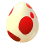
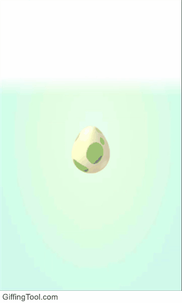

Los Pokémon son criaturas de todo tipo de formas y tamaños que viven bien en un medio salvaje o junto a los seres humanos. La mayoría de los Pokémon solo hablan para decir sus nombres. En la actualidad, hay más de 700 criaturas que habitan el universo Pokémon.
Los dueños de los Pokémon (denominados “Entrenadores”) los crían y los cuidan. Durante sus aventuras, los Pokémon crecen y adquieren más experiencia, e incluso, en ocasiones, evolucionan para convertirse en Pokémon más fuertes.
¿QUE SON LOS POKEMON?




TODO COMENZO CON UN HUEVO

Todos sabemos que los Pokémon están muy relacionados con los huevos, aunque la razón de esto es un misterio para la mayoría. Pues resulta que un huevo es el origen de todo.
En principio no existían planetas ni galaxias, solo moléculas dispersas en un mar de nada. Pero todo cambió cuando de esta nada apareció el primer huevo, sin una explicación concreta ni necesaria. De este huevo nació Arceus, el Pokémon original. Se cree que este fue el responsable de crear el el mundo Pokémon y todo lo que conocemos hasta ahora sobre este.
Arceus empezó creando a tres Pokémon como sus herramientas. Palkia nació con el poder de controlar el espacio, mientras que a Dialga se le encargó el tiempo. Así se originó el mundo Pokémon y todo a su alrededor. Pero para compensar tanta creación, Arceus le dio forma a un Pokémon capaz de controlar la antimateria: Giratina.
Sin embargo, fue tanta la destrucción que Giratina trajo al universo, que Arceus se vio en la necesidad de desterrarlo al Mundo Distorsión, un mundo que creó como un reino de castigo por alguno de estos Pokémon de la creación. Esto dio paso a que los Pokémon legendarios Kyogre, Groudon y Rayquaza pudieran crear los cuerpos de agua, tierra y cielo para que los humanos y Pokémon pudieran habitar la tierra. Luego Azelf, Mesprit y Uxie trajeron los sentimientos y emociones que los humanos necesitarían para vivir en paz.


¿COMO NACEN LOS POKEMON?
 
Como ya mencionado, un huevo es el origen del Pokémon responsable del universo, así que no es de extrañar que la mayoría de los Pokémon originen de huevos. No conocemos el origen exacto de estos huevos, y es posible que más adelante la serie nos lo revele, pues hay montones de científicos en el mundo Pokémon estudiando estas criaturas constantemente.
Lo que sí sabemos es que casi todos los Pokémon nacen de huevos, aunque no necesariamente se originaron así. Por ejemplo, muchos Pokémon fantasmas fueron creados debido a incidentes misteriosos y siniestros, algunos a partir de muñecas y otros de espíritus que no pasaron al más allá. Así que hay una fuerza vital en este mundo que es capaz de dar vida a nuevas especies o de recrearla, como cuando un Exeggcute se desprende de una de sus caras.
Otra forma en la que puede nacer un Pokémon diferente a la eclosión es a través de experimentos. Los humanos han creado exitosamente algunos Pokémon, como es el caso del reconocido Mewtwo, que es un poderoso clon de Mew. También tenemos el caso de Porygon, quien es conocido como el primer Pokémon artificial y fue dotado con la habilidad de cambiar de forma.
